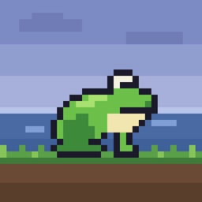

Yusuke Ayabe のアプリ
個人で開発・公開しているiPhoneアプリです。
TripSketch - 旅程プランナー
旅行
友だちや家族と一緒に編集できる旅のしおりアプリ。1日ごとのタイムラインで予定を組み立て、招待リンクで同行者とリアルタイムに共同編集できます。

ぴょんぴょんぴょん
ゲーム・カジュアル
雨の降る池のほとりを、カエルがぴょんぴょん進んでいくドット絵アクションゲーム。押す長さでジャンプの高さが変わるワンボタン操作で、空から襲ってくる天敵をかわしましょう。